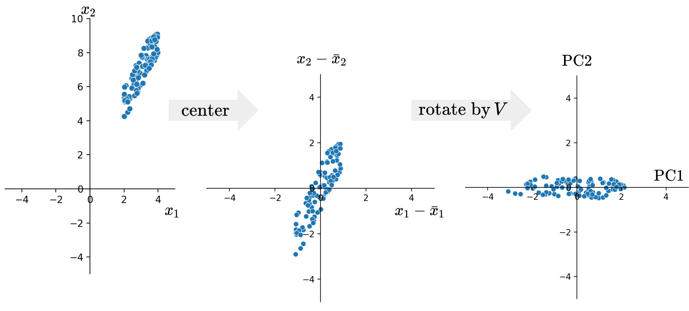
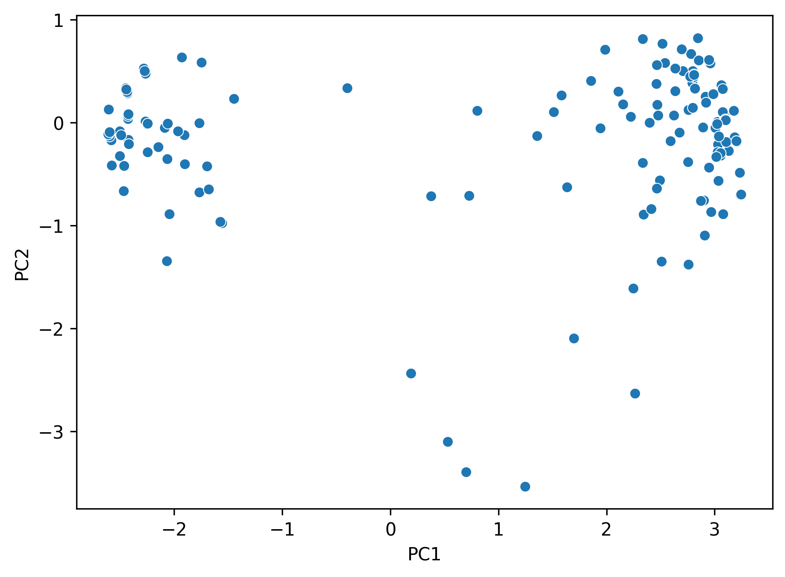
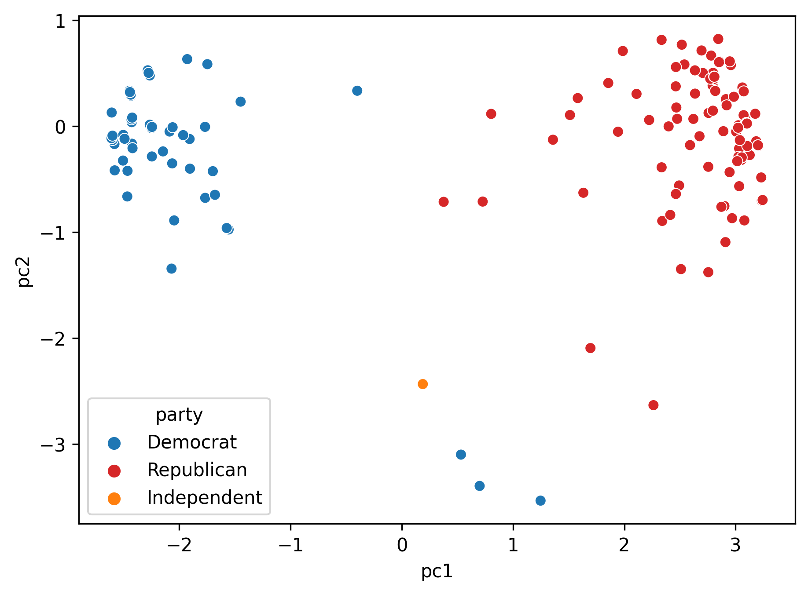
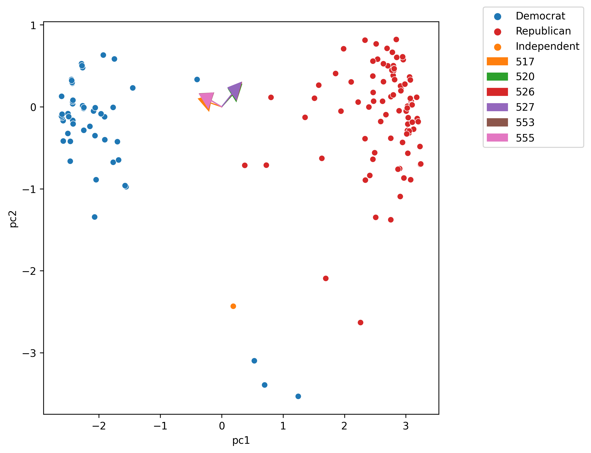

Develop a deeper understanding of how to interpret Principal Components Analysis (PCA).
See how we use PCA for EDA and feature generation.
In this second lecture on PCA, we will talk more about the principal components that we got last time: what do they represent? How can we interpret them? How do we use PCA to preform Exploratory Data Analysis (EDA)?
23.1 PCA Review
23.1.1 Recap from Last Time
Recall the steps we take to obtain Principal Components via Singular Value Decomposition (SVD):
Center the data matrix by subtracting the mean of each attribute column
To find the first \(k\)principal components:
Compute the SVD of the data matrix (\(X = U{\Sigma}V^{T}\))
The first \(k\) columns of \(U{\Sigma}\) (or equivalently, \(XV\)) contain the first \(k\) principal components of \(X\).
The principal components are a low-dimension representation that capture as much of the original data’s total variance as possible.
Component scores measure how much variance each principal component captures. If the the total number of rows of the data matrix \(X\) is \(n\), \[\text{component score } i = \frac{\sigma_i^{2}}{n}\]
They sum to the total variance if we center our data.
We can also use the SVD to get a rank-\(k\) approximation of \(X\), \(X_k\).
\[X_k = \sum_{j = 1}^{k} \sigma_ju_jv_j^{T} \]
where \(\sigma_j\) is the \(j\)th singular value, \(u_j\) is the \(j\)th column of \(U\), and \(v_j\) is the \(j\)th column of \(V\).
23.1.2 PCA is a Linear Transformation
Essentially, we can think of PCA as a linear transformation, performed by the matrix \(V\). In particular, PCA centers the data matrix \(X\), then rotates it such that the direction with the most variation (i.e. the direction that is the most spread-out) is aligned with the \(x\)-axis.
Below is an illustration of how PCA centers and rotates a 2D dataset.

From the final plot on the right, we can see the principal components plotted on the two axes, with Principal Component 1 (PC1) on the \(x\)-axis and Principal Component 2 (PC2) on the \(y\)-axis. We can see that principal components are orthogonal to each other and axis-aligned.
Another perspective to look at the principal component is through matrix multiplication.
Recall that to get the first principal component, we can get the first column of \(XV\). This is the same as taking the matrix \(X\) and multiply it with the first column of \(V\):
This allows us to see that principal components are in fact linear combinations of the columns of \(X\). The first column of \(V\) indicates how each column/feature contributes to PC1. For example, if \(v_{11}\) is big, then we know the first feature is important in constructing PC1, or that the first feature is important in discerning the data points from each other.
As a summary, we saw that
Principal components are all orthogonal to each other
Principal Components are axis-aligned. If we plot two PCs on a 2D plane, one will lie on the x-axis, the other on the y-axis
Principal Components are linear combinations of columns in our data X
Specifically, we’ll look at the records of Roll call votes. For each roll call vote, members of the house will have three options from consenting (“Yea”), dissenting (“Nay”), or not presenting (“Not Voting”).
The question we potentially want to ask is “do legislators’ roll call votes show a relationship with their political party?”
The data, compiled from ProPublica source, is a “skinny” table of data where each record is a single vote by a member across any roll call in the 116th Congress, 1st session, as downloaded in February 2020. The member of the House, whom we’ll call legislator, is denoted by their bioguide alphanumeric ID in http://bioguide.congress.gov/.
Code
import pandas as pdimport seaborn as snsimport matplotlib.pyplot as pltimport numpy as npimport yamlfrom datetime import datetimefrom ds100_utils import*np.random.seed(23) #kallistiplt.rcParams['figure.dpi'] =150# February 2019 House of Representatives roll call votes# Downloaded using https://github.com/eyeseast/propublica-congressvotes = pd.read_csv('data/votes.csv')votes = votes.astype({"roll call": str}) votes.head(5)
chamber
session
roll call
member
vote
0
House
1
555
A000374
Not Voting
1
House
1
555
A000370
Yes
2
House
1
555
A000055
No
3
House
1
555
A000371
Yes
4
House
1
555
A000372
No
To make the dataset easier to work with, we will pivot this table to group each legislator and their votes across every (roll call) vote in this month. We mark 1 if the legislator voted Yes (yea), and 0 otherwise (No/nay, no vote, speaker, etc.).
We can see our data has 441 rows (each representing a legislator) and 41 columns (each representing a roll call vote). So this data is relatively high-dimensional.
How do we analyze this data?
While we could consider loading information about the legislator, such as their party, and see how this relates to their voting pattern, it turns out that we can do a lot with PCA to cluster legislators by how they vote. Let’s do it!
We then compute the SVD using this centered data matrix.
u, s, vt = np.linalg.svd(vote_pivot_centered, full_matrices =False)
23.2.1 PCA Plot
We can get the principal components by calculating either \(U\Sigma\) or \(XV\).
Then we can try to plot the first two principal components using a scatter plot, with PC1 on the \(x\)-axis, PC2 on the \(y\)-axis. This is often called a PCA plot.
PCA plots allow us to visually assess similarities between our data points and if there are any clusters in our dataset.
pcs = u * ssns.scatterplot(x=pcs[:, 0], y=pcs[:, 1]);plt.xlabel("PC1");plt.ylabel("PC2");

But how do we know if our plot is valid? We are projecting from a 41-dimensional space to a 2-dimensional one; how do we know whether or not we are overlooking important details of the dataset?
Remember that our singular values are tied to variances. If the first two singular values are large and all others are small, then two dimensions are enough to describe most of what distinguishes one observation from another. If not, then a PCA plot is omitting a lot of information.
23.2.2 Scree Plot
In practice, we will calculate something called the variance ratio of each principal component. It is defined as the fraction of total variance captured by each principal component.
To get the variance ratio of principal component \(i\), we calculate
Sometimes, instead of variance ratio, people can plot the actual variance/component score of each principal component. That is also a valid scree plot.
Now let’s continue analyzing the PCA plot from earlier. We can see that there are two “clusters” of points: what’s so different between those two clusters? Let’s check.
We’ll load in the information about the legislators’ political parties. Now we have a new column in the original dataset about which party (Democratic or Republican) the member is affiliated with.
Using cached version that was downloaded (UTC): Thu Aug 3 22:16:30 2023
First, let’s the party affiliations of those who are in the upper left corner of the PCA plot. In other words, we take all members with negative PC1 values.
vote2d[vote2d['pc1'] <0]['party'].value_counts()
party
Democrat 231
Name: count, dtype: int64
All of them are Democrats! Let’s keep going.
Now I’m only getting the upper right corner—all members with PC2 value greater than -2 and PC1 value greater than 0.
All of them are Republicans. Let’s use these party labels to color our principal components.
Code
cp = sns.color_palette()party_cp = [cp[i] for i in [0, 3, 1]]party_hue = ["Democrat", "Republican", "Independent"]
sns.scatterplot(x="pc1", y="pc2", hue="party", palette=party_cp, hue_order=party_hue, data = vote2d);

23.2.3 Biplots
Recall the values in \(V\) encodes information about how each feature in our original data matrix contributes to the principal components. Let’s incorporate that into our visualization!
Biplots superimpose the directions onto the plot of principal component 2 vs. principal component 1.
Vector \(j\) corresponds to the direction for feature \(j\) (e.g. \(v_1j, v_2j\)). - There are several ways to scale biplot vectors; in this course we plot the direction itself. - For other scaling, which can lead to more interpretable directions/loadings, check out SAS biplots
Through biplots, we can interpret how features correlate with the principal components shown: positively, negatively, or not much at all.
Code
import randomroll_calls =sorted([517, 520, 526, 527, 555, 553]) # features to plot on biplot# roll_calls = [515, 516, 517, 520, 526, 527, 553]plt.figure(figsize = (7, 7))# first plot each datapoint in terms of the first two principal componentssns.scatterplot(x="pc1", y="pc2", hue="party", palette=party_cp, hue_order=party_hue, data = vote2d);# next, plot the loadings for PC1 and PC2cp = sns.color_palette()[1:] # skip bluedirections_df= pd.DataFrame(data=vt[:2,:].T, index=vote_pivot_centered.columns, columns=["dir1", "dir2"])dir1, dir2 = directions_df["dir1"], directions_df["dir2"]for i, feature inenumerate(roll_calls): feature =str(feature) plt.arrow(0, 0, dir1.loc[feature], dir2.loc[feature], head_width=0.2, head_length=0.2, color=cp[i], label=feature)plt.legend(bbox_to_anchor=(1.1, 1.05));

The directions of the arrow are (\(v_1\), \(v_2\)) where \(v_1\) and \(v_2\) are how that specific feature column contributes to PC1 and PC2, respectively. \(v_1\) and \(v_2\) are elements of \(V\)’s first and second columns, respectively (i.e., \(V^{\top}\)’s first two rows).
As a summary for this demo, we saw three visualizations we can create using the results from PCA:
PCA plots. These are scatter plots of PC1 against PC2. They help us assess similarities between our data points and if there are any clusters in our dataset.
Scree plots. These are line plots showing the variance ratio captured by each principal component, largest first. If first two is large enough, we know PCA plot is good representation of data.
Biplots. These are PCA plots superimposed by the directions onto the plot of principal component 2 vs. principal component 1. They show how much some features contribute to PC1 and PC2.
23.3 Applications of PCA
There are many more applications of PCA. In general, we use PCA mainly for the following reasons:
Visually identifying clusters of similar observations in high dimensions.
Removing irrelevant dimensions if we suspect that the dataset is inherently low rank. For example, if the columns are collinear: there are many attributes but only a few mostly determine the rest through linear associations.
Finding a small basis for representing variations in complex things, e.g., images, genes.
Reducing the number of dimensions to make some computation cheaper.
We’ve seen the first two in action in our previous demo. In some more complex datasets like images, we can leverage PCA to simplify our dataset.
In lecture, we walked through an example using PCA on the Fashion-MNIST dataset. Feel free to check out the demo notebook if you are interested.
23.3.1 PCA with sklearn
To conclude, let’s see how we can perform PCA more easily, with sklearn.
Like other models/algorithms in sklearn we’ve worked with before, we can create a PCA object. When initiating the object, we need to specify the number of principal components we want to get back. We’ll use 2 here.
from sklearn.decomposition import PCApca = PCA(n_components=2)
We can fit the model using .fit and our data matrix:
pca.fit(vote_pivot_centered)
PCA(n_components=2)
In a Jupyter environment, please rerun this cell to show the HTML representation or trust the notebook. On GitHub, the HTML representation is unable to render, please try loading this page with nbviewer.org.
PCA(n_components=2)
To get the principal components, we need to call .transform: